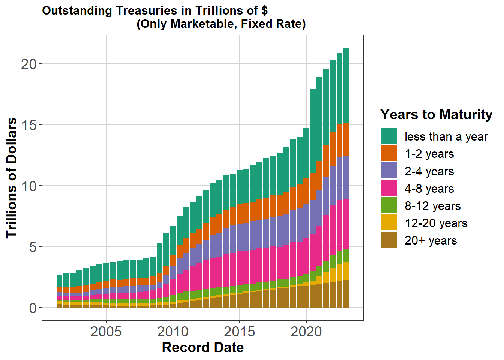
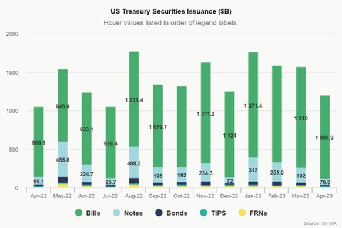
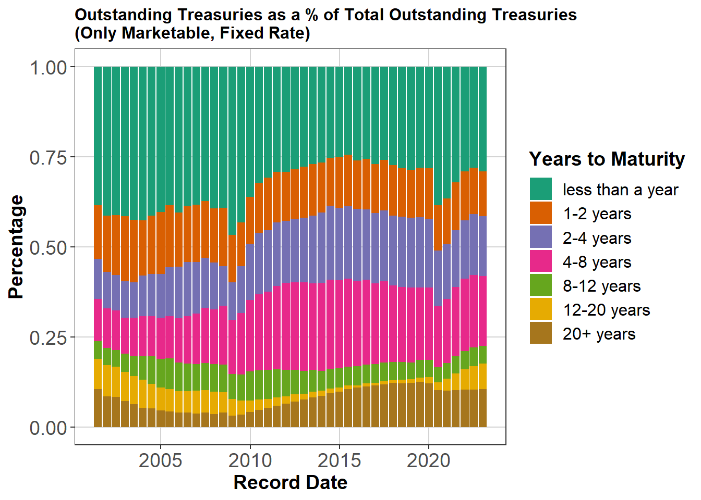
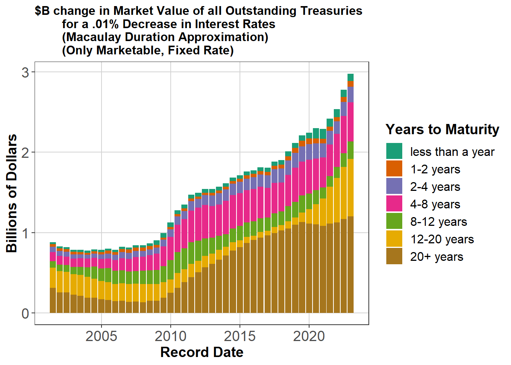
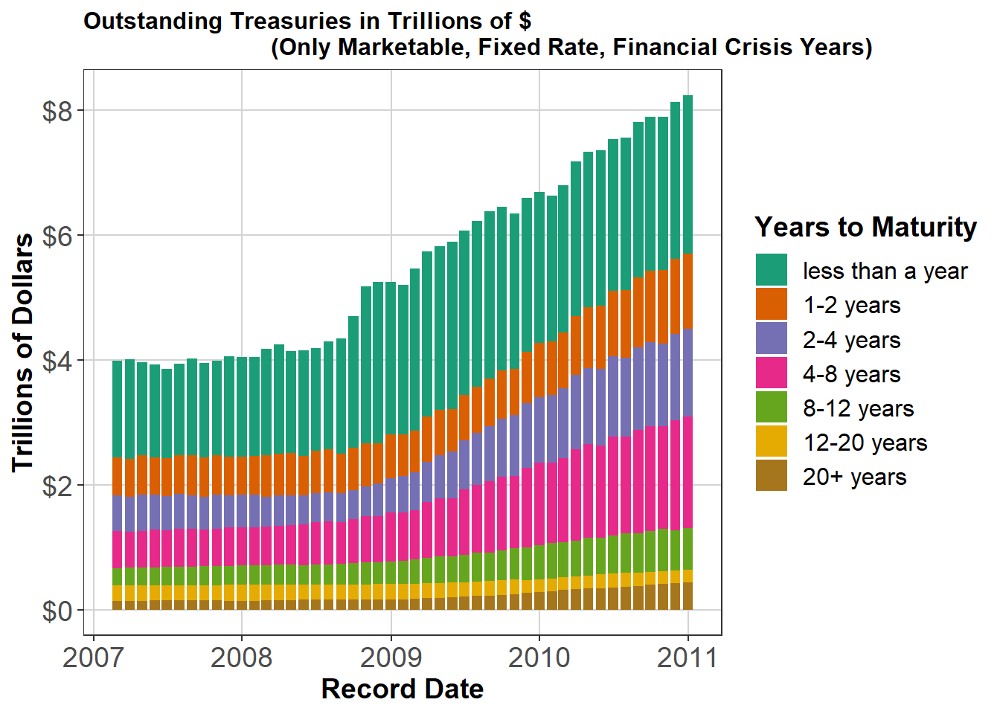

Economic History
Duration and Public Finance
Duration and Public Finance in the United States, 2001-2023
By Nick Anderson
Dated 2023.05.19
1. Introduction
The United States Treasury Market is a vital funding mechanism for federal government expenditures and has evolved considerably and unpredictably over the last century. This paper focuses on two aspects: the debt issuance of the U.S. Federal Government and the duration of those securities.
This story is told by the Monthly Statements of the Public Debt. The United States Treasury has published this on the last day of every month since January of 2001. The novel analysis involved in the writing of this paper involved calculating the bond value and duration for each unique CUSIP (security identification code) of federal government security that has been outstanding since 2001. Because the focus of this paper is on the impact of duration on the Treasury Market, this paper focuses on the only marketable fixed rate treasuries. Floating rate treasuries have durations that are less stable over time and in some cases less sensitive to interest rate changes.
The paper then zooms in on three time periods with interesting debt dynamics: the Great Financial Crisis, the 2010’s, and the Coronavirus Pandemic. This is followed by the author’s conclusions.
2. The Treasury Market and the Deficit
For the period 2019-2022, the government has borrowed an additional $983B to $3.1 Trillion a year in order to finance the spending activities of the U.S. Federal Government. Over the same period, these deficit amounts have amounted to between 13% and 34% of total Government spending. This is at a time where government spending is between 20% and 30% of Gross Domestic Product. The deficit spending in these years was between 5% and 15% of Gross Domestic Product. To restate, new government borrowing has recently accounted for at least 5% of Gross Domestic Product for the past four years.
This new debt has contributed for over forty years to the massive accumulation of the stock of Treasury debt since 1980. This existing debt comes with an additional obligation. In addition to the new debt necessary to fund the U.S. Federal Government, the United States is required to refinance over $1 Trillion of treasuries a month, resulting in a significant continuous amount of additional borrowing in the market for Treasuries. The United States has no choice but to refinance or default, implying the vital importance of the Treasury market in the continued functioning of the economy of the United States.
Below, Figure 1 depicts the stocks outstanding of U.S. Treasuries by Years to Maturity with data from the Treasury and Figure 2 depicting aggregate treasury issuance from April 2022 to April 2023.
Figure 1

Figure 2

Figure 3 depicts the percentage of Treasury securities by their maturities.
Figure 3

A few notes on the figures above: 1. Figure 1 displays the meteoric rise in the stock of treasury debt outstanding.
Figure 1 also resembles a dataset with multiple structural breaks. There are differences in the growth of the stock of debt demarcated by the years 2008 and 2020, reflecting the economic turmoil and stimulus surrounding the Great Financial Crisis and Coronavirus Pandemics respectively.
Figure 2 evidences that because Treasury Bills have the shortest maturities, they require the lions share of the refinancing. This is expected.
If we sum the columns of Figure 2 we would find that the government’s gross issuance of treasuries last year was $18.325 Trillion.
Figure 3 reflects the crisis story in note 2 above. There are spikes in the issuance of shorter duration securities and securities in general, implying that the U.S. Federal Government relies on the market for short duration Treasuries in times of crisis.
We will review the implications of the above figures in more detail in later sections.
With several exceptions , the U.S. Federal Government has not had a problem issuing this debt to the public and foreign investors. However, despite constant discussion of the size and sustainability of the deficit, both the size of the budget deficit and the stock of debt have continued to increase. There are many theories of public finance which hold both that the government can never default on its debt and alternatively that the government is like a household and can default on its debt. The purpose of this paper is not to discuss the feasibility or correctness of any theories of public finance, but rather to examine the composition and evolution of the outstanding stock of treasury securities. The government, like all other actors in a financialized economy, has the prerogative to make decisions about the composition of its balance sheet, and these financing decisions have implications for both the public and private sectors.
3. Duration
85 years ago, Frederick R. Macaulay published his 1938 study of railroad bond prices entitled Some Theoretical Problems Suggested by the Movements of Interest Rates, Bond Yields, and Stock Prices in the United States since 1856, in which he proposed the measure of duration to represent the average maturity of a series of cash flows (Weil, 1973). This contribution to the theory and practice of finance has since become a dominant concept in professional money management taught in business schools across the country.
The duration of a bond is an easily calculable mathematical concept, calculated as the weighted average of the sum of the Present Values of the remaining cash flows for a particular security. Duration is expressed in years and, because bonds whose cash flows are further into the future are more uncertain and thus discounted more heavily by an increase in interest rates. In Figure 4 below, the duration of two different types of fixed income securities is calculated as an example. This is also called the Macaulay Duration of a security.
Figure 4
Figure 4: Example Duration Calculation for a 5% Coupon Bond versus an Annuity
This figure reflects the payment schedule for two bonds paying out over five years. The 5% Coupon bond pays the calculated coupon payment for five years and returns its principal at the end of that period. The annuity pays an equal payment for all five years. As the annuity pays out more evenly over the five-year period, unlike the heavily back-end concentrated coupon bond, the duration of the annuity is 2.903 years and the duration of the coupon bond is 4.546 years.
Because of the relationship between the duration of securities and the growing magnitude of their discounts over time, duration is often used as a measure of interest rate risk. Using a formula entitled a “duration approximation” because it is not an exact measure of interest rate sensitivity, investors can estimate the change in the value of their fixed income securities using the duration of those securities.
The duration approximation equation in Figure 5 estimates the change in the price of the security given the duration of the security, the change in the market yield of the security, and the current yield to maturity of the security. Figure 6 below applies the duration approximation equation to the two securities above and compares them to actual changes in market value.
Figure 5: The Duration Approximation Equation
Change in $ Price = -(Macaulay Duration) * Change in Market Yield / (1 + Yield to Maturity)
Figure 6
As demonstrated by the Duration Approximation and Actual Change columns above, the Approximation is a close estimator of the actual change in market value.
In practice, contemporary fixed income money managers keep dashboards that record and display the duration of their portfolios. At both money managers and market making firms, investors regularly have “duration limits” to their position sizes and feverishly keep track of the duration of all the securities they own, along with the duration of their aggregate portfolio. The impetus of this paper is to apply the investment management concept of duration to the field of public finance and, more specifically, the government’s issuance of massive amounts of securities, and thus massive amounts of duration.
4. Aggregate Duration in the Treasury Market
The inspiration for this paper lies in the author’s thirst for measures of the aggregate duration in the treasury market and the evolution of this statistic over time. As discussed in section 2 above, the treasury market is a vital funding mechanism for the U.S. Federal Government, and all of those trillions of dollars of securities hold some measure of interest rate risk that affects the willingness of investors to hold those securities. Figure 7 displays the aggregate duration approximation of the treasury market, colored by years to maturity.
Figure 7

Figure 7 stands in complement to Figure 1, as Figure 7 represents the aggregate duration outstanding of the stock of debt reflected in Figure 1.
Given what we established above regarding the increased interest rate sensitivity of securities with longer durations, the outsized contribution of securities with 20+ years (and more recently, 12-20 years) to the aggregate duration of the outstanding marketable, fixed rate treasuries is expected, but still jarring in magnitude.
Another interesting aspect of the historical development of the aggregate duration in the treasury market relates to timing: beginning around the Great Financial Crisis, the Obama and Trump administrations elected to issue significantly more 20+ year duration treasuries which, although they never reached more than 15% of the notional debt outstanding, the aggregate duration of 20+ year securities exceeded 50% of aggregate duration in 2017. This is a demonstration of the outsized duration contribution of the longest duration securities we would expect intuitively.
Figure 7 reveals the same story when graphed as percentages of the total Duration in the market, as in Figure 8 below.
Figure 8
Now that we have surveyed the entire dataset available for the outstanding debt of the U.S. Federal Government, we will inspect a few time periods more closely below.
5. Study 1 – the Treasury Stock during the Great Financial Crisis
Figure 9

The above Figure 9 displays the debt stock during the most volatile years of the Great Financial Crisis. As the government decided to borrow to stimulate the economy in the second half of 2009, they relied heavily on the issuance of short-duration treasuries, evidenced by the growing proportion of the total debt stock in securities that expire in less than 1 year in Figure 10 below.
Over time, however, the government rebalanced back towards longer duration securities. As we will note below, this begins a period in which the government issued an outsized amount of longer duration securities during the Obama and Trump administrations.
Figure 10
6. Study 2 – Duration during the Obama and Trump Administrations
Following the Great Financial Crisis and the passage of Obamacare, the national debt rose considerably faster than before, over doubling between 2010 and 2020. At the same time, the U.S. Federal Government also increased its issuance of 20+ year securities to finance this additional deficit spending. The stocks of these debts are in Figure 11 below.
Figure 11
Figure 12 demonstrates that rapid rise in duration outstanding with the issuance of those longer duration securities. Figure 13 displays these as a percentage of total aggregate duration.
Figure 12
Figure 13
7. Study 3 – the Treasury Stock during the Coronavirus Pandemic
During the Coronavirus Pandemic, the stock of the national debt fluctuated in the same manner as during the Great Financial Crisis. Figures 14 and 15 describe that stock of debt.
Figure 14
Figure 15
9. Conclusions
The outstanding stock of the national debt has grown exponentially over the past four decades and is not displaying signs of slowing down. With the increased stock of debt comes massive amounts of interest rate risk that can be measured in duration.
In addition to displaying the development of that national debt stock, this paper describes the fluctuations and composition of the total amounts of duration risk outstanding in the U.S. Treasury Market. This topic merits considerable further research and this author looks forward to pursuing this additional research.
Bibliography
FRED Deficit Dataset. Federal Reserve Bank of St. Louis, March 8, 2023. https://fred.stlouisfed.org/series/FYFSD.
FRED Expenditures Dataset. Federal Reserve Bank of St. Louis, March 8, 2023. https://fred.stlouisfed.org/series/W068RC1A027NBEA.
FRED GDP Dataset. Federal Reserve Bank of St. Louis, March 8, 2023. https://fred.stlouisfed.org/series/GDPA.
Securities Industry and Financial Markets Association (SIFMA). “US Treasury Securities Statistics.” SIFMA website, https://www.sifma.org/resources/research/us-treasury-securities-statistics/. Accessed May 20, 2023.
U.S. Treasury Fiscal Data. Monthly Statement of the Public Debt (MSPD). FiscalData.Treasury.gov, n.d. Web. 20 May 2023. https://fiscaldata.treasury.gov/datasets/monthly-statement-public-debt/summary-of-treasury-securities-outstanding.
Weil, Roman L. “Macaulay’s Duration: An Appreciation.” The Journal of Business, vol. 46, no. 4, 1973, pp. 589–92. JSTOR, http://www.jstor.org/stable/2351923. Accessed 21 May 2023.
Tax Revenue Cyclicality
Tax Revenue Cyclicality: The U.S. Example 1800-2020
By Nick Anderson
Dated 2022.01.07
Abstract
This paper investigates the correlation between cyclicality and federal tax revenue in the United States. From the Funding Act of 1790, the United States has evolved alongside its tax system. After relying heavily on Customs Duties and Excise Taxes from 1790 to 1913, the United States turned to the Income Tax as its primary funding mechanism. Are these funding mechanisms procyclical or countercyclical? Can procyclical funding mechanisms reliably fund countercyclical fiscal policy?
Introduction
Countercyclical fiscal policy was a cornerstone of the Keynesian revolution in economics. Keynes emphasized that, in economic downturns, governments who imposed austerity and cut spending only worsened their recessions by decreasing the level of aggregate demand. Thus, governments should respond to downturns with stimulus, spending against the cycle. To fund (or pay down the debt from) this stimulus, governments would run a surplus in upturns. The complication in the above policy prescription lies in the nature of the income tax. By the publication of Keynes’ General Theory in 1936, the income tax was a vital funding mechanism for the United States and United Kingdom, among many other countries. Because income taxes are earned by the government only when taxable incomes are earned, income taxes are inherently procyclical. This paper grew out of the author’s attempt to test the strength of the income tax’s cyclicality in U.S. history. The starkest example of the income tax’s cyclicality occurred in the Great Depression. As unemployment increased to as high as 24% in 1933, U.S. income tax revenues fell over 60% (Figure 1). In the years of greatest revenue need, income tax revenues almost disappeared.
Sources: Tax Data: FILL Unemployment Data: Lebergott 1957 (he was with the NBER) and the BLS Data
The Great Depression remains the severest example of economic depression available for examination. The author emphasizes this example not as conclusive proof, but as a demonstration of income tax revenue procyclicality.
The ‘business cycle’ is not easy to define, so this paper examines two aspects of cyclicality: Gross Domestic Product (as a measure of incomes) and the Unemployment Rate (as a measure of employment). The graph above replicated with Nominal GDP instead of the unemployment rate tell the similar stories from different perspectives (Figure 2). When aggregate demand contracts, the income tax contracts as well.
Source: FILL Data
Data
Data collection and cleaning proved the most difficult portion of this paper. FRED timeseries data for GDP, unemployment, and the federal budget all cut out between 1929 and 1999, requiring alternative data sources for further historical investigation.
Each data set is described below:
Tax Revenue (1792-2020): Hungerford (2006) provides a great foundation for comprehensive datasets of US Federal Government Revenues. In a Congressional Research Service report, he compiles a dataset of Federal Revenues from 1820-2005 from three sources. Though one of these sources is unavailable to the public, the included Office of Management and Budget’s Historical Tables’ 2020 update has detailed revenue data from 1934 to 2020. There is some included data going back to 1789, but without component totals (income, excise, customs, etc.) and in some cases not annual data. For earlier data, Hungerford (2006) reached back to Lillian Doris’ The American Way in Taxation: Internal Revenue 1862-1963, which included specific data on income taxes and excise taxes from 1820-1962 but lacked other sources of revenue and left our dataset incomplete. Fortunately, the 1949 Historical Statistics of the United States 1789-1945 includes detailed annual totals from 1792 to 1945, which bridges the gap in this dataset. This paper’s final tax revenue dataset is 1792-1944 from Historical Statistics of the United States 1789-1945 and 1945-2020 from Office of Management and Budget (2022).
Gross Domestic Product (1792-2020) : This paper’s first proxy for cyclicality is Gross Domestic Product. The collaborative work of Johnston and Williamson (2022) on measuringworth.com aggregated data from Kuznets et. al up to 1929 and uses the Bureau of Economic Analysis’ current estimates from 1929 to 2020. This paper utilizes the Johnston and Williamson (2022) dataset for the years 1792-2020.
Unemployment (1900-2020): The second proxy for cyclicality is the unemployment rate. FRED unemployment data is monthly and only reaches back to January 1948, so for any pre-war data another source is needed. Lebergott (1957) combines estimates from 1900-1928, Monthly Labor Review data for 1929-1939, and data through 1954 from the Bureau of the Census. This paper’s final unemployment dataset includes 1900-1948 from Lebergott (1957) and FRED’s estimates from 1948-2020 (UNRATENSA).
Tax History
The history of taxation in the United States can be split into four eras:
Customs Duties Era (1790-1862): The era before 1862 is the era of Customs Duties. Another feature of this era is the sporadic use of Sale of Public Land to raise revenue.
Excise Tax Era (1862-1913): The establishment of the IRS in 1862 allowed for Excise and Income taxation, though the Income Tax was repealed in 1872. This marks the second era between 1862 and 1913, where the Excise Tax and Customs Duties combined for more than 90% of Federal Government Revenues.
Income Tax Era (1913-1945): After being deemed unconstitutional in 1892, the Income Tax was reestablished in 1913 when Wilson’s administration signed the 16th Amendment into law. The Income Tax does not remain above 50% of federal revenues until World War II. These dates distinguish the third era, in which two wars and a Great Depression occur.
Decline of Income Tax Era (1945-Present): The undercurrent of the Income Tax Era is the onset and growth of Social Insurance and Retirement Taxes, or Payroll Taxes. After reaching over 80% of federal government revenue in 1945, the Income Tax enters a slow decline as Payroll Taxes grew from 8% of revenues in 1945 to over 40% revenues in 2004. This paper was written in the fourth era. The data for Figure 3 below uses the methodology and data from Hungerford (2006). His CRS report summarized US Tax History into three phases instead of four, combining this paper’s two eras of Income Tax dominance into a single Income Tax Era.
Source: FILL Data
Analysis
This paper’s method relies on a simple decade by decade calculation of correlation between the measure of cyclicality (GDP or Unemployment Rate) and Tax Revenue by Source.
This first Figure 4 provides a two-century overview of the U.S. Federal Government’s Total Receipts’ 10-Year Correlation with Nominal GDP. In the initial 1800-1820, Total Receipts had a negligibly or negatively correlated relationship with Nominal GDP. For the remainder of U.S. history, Total Receipts remains positively correlated with Nominal GDP.

Compare Figure 4 to Figure 5. The annual growth of the Unemployment Rate is negatively correlated with Total Receipts over the sample period 1910-2020. Because the Unemployment Rate would increase in a downturn, this again is evidence that U.S. tax revenue is procyclical. Let’s compare these two indicators to the specific types of taxes observed.
First, is the income tax correlated with GDP or changes in the Unemployment Rate? Figure 6 displays the negative of the Income Tax vs Unemployment Rate, which means that the positive displayed values are the result of a negative correlation with Unemployment Rate. This graph confirms the author’s hypothesis. The Income Tax maintains a procyclical orientation towards Nominal GDP and Unemployment Rate. To be specific, the Income Tax is positively correlated with Nominal GDP and negatively correlated with the Unemployment Rate.
The correlation of Social Insurance and Retirement Taxes with Nominal GDP and the Unemployment Rate tell a different story. When initially created, these Payroll taxes grew in a cyclical manner. However, since the correlation disappeared in the 1960’s and 1970’s, Social Insurance and Retirement Taxes have not been entirely procyclical or countercyclical.
The correlation of Social Insurance and Retirement Taxes with Nominal GDP and the Unemployment Rate tell a different story. When initially created, these Payroll taxes grew in a cyclical manner. However, since the correlation disappeared in the 1960’s and 1970’s, Social Insurance and Retirement Taxes have not been entirely procyclical or countercyclical.
Finally, Customs Duties. Customs Duties are only compared to Nominal GDP because our Unemployment dataset does not reach before 1900. Though the picture is mixed before 1860, after 1880 Customs Duties remain positively correlated with GDP, thus displaying procyclical tendencies, though not as strong as the income tax.
Conclusion
Centuries of evidence from the United States supports the conclusion that tax revenue displays procyclical tendencies. Specifically, the income tax has remained consistently procyclical when compared to both Gross Domestic Product and Unemployment Rates. However, this author understands their data and method could be refined to draw more nuanced conclusions. The evolving political landscape and tax system provide no shortage of ‘factors’ that could be adjusted for when examining centuries long timeseries from different sources.
References
“Government (Series P 1-277).” Historical Statistics of the United States: 1789-1945; a Supplement to the Statistical Abstract of the United States, United States Dept. of Commerce, Washington, DC, 1949, pp. 283–319.
“Historical Tables.” The White House Historical Tables, U.S. Office of Management and Budget, 28 May 2021, https://www.whitehouse.gov/omb/historical-tables/
Hungerford, Thomas L. “U.S. Federal Government Revenues: 1790 to the Present.” Everycrsreport.com, 5 Sept. 2006, https://www.everycrsreport.com/reports/RL33665.html.
Johnston, Louis, and Samuel H Williamson. “What Was the U.S. GDP Then?” Measuring Worth - GDP Result., Measuringworth, https://www.measuringworth.com/datasets/usgdp/result.php.
Lebergott, Stanley. “Annual Estimates of Unemployment in the United States, 1900-1954.” Unemployment: Pamphlets, NBER, 1957, pp. 211–242.
Office of Management and Budget. Historical Tables. Table 1.1, “Summary of Receipts, Outlays, and Surpluses or Deficits (-): 1789–2026;” Table 1.4, “Receipts, Outlays, and Surpluses or Deficits (-) by Fund Group: 1934–2026;” Table 2.1, “Receipts by Source: 1934–2026;” and Table 2.3, “Receipts by Source as Percentages of GDP: 1934–2026.” U.S. Bureau of Labor Statistics, Unemployment Rate [UNRATENSA], retrieved from FRED, Federal Reserve Bank of St. Louis; https://fred.stlouisfed.org/series/UNRATENSA
Last compiled: 2023-08-26